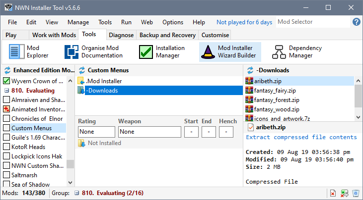
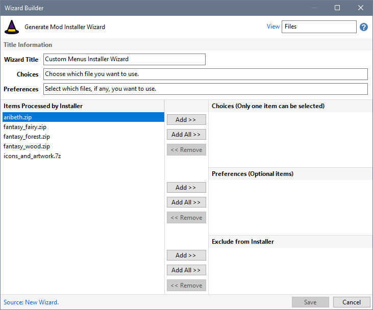
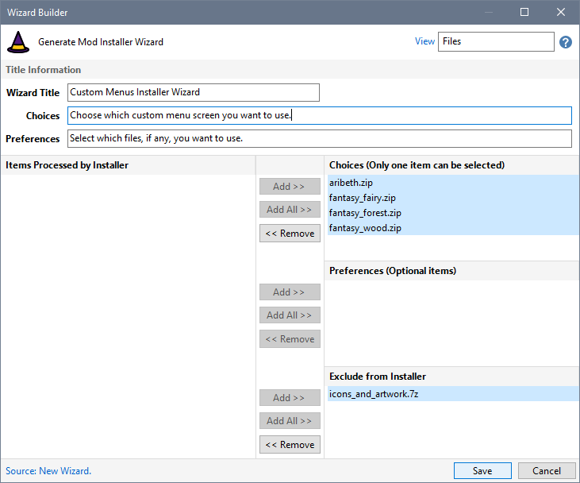
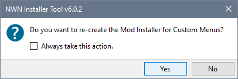
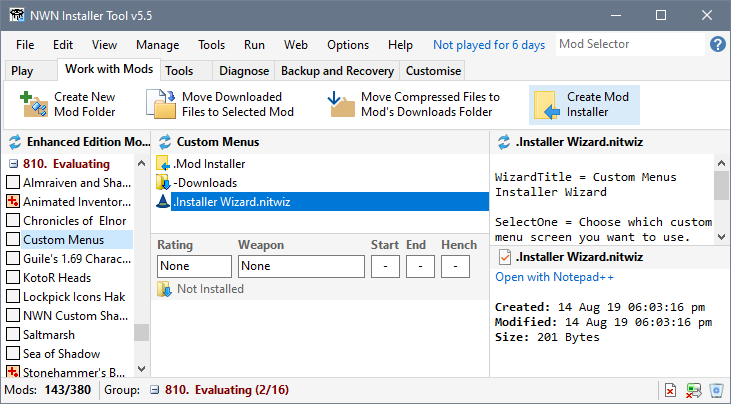
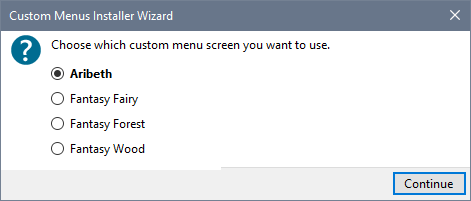

The Vault's Custom Menus project provides a number of files for download. However, only one of the files can be used at a time. In addition, the remaining file contains desktop icons and wallpaper images and should not be processed by Create Installer. You can use the Wizard Builder to define a Wizard that ignores certain files and asks you which file to use each time your create the Mod Installer for Customs Menus.
- Select the Mod that requires an Installer Wizard.

- Choose Installer Wizard Builder from the Tools Menu.

- Select icons_and_artwork.7z and click the Add Exclude from Installer Files button. Click the Add All File Choices button to move the remaining files into the File Choices area. You can change the text that is displayed in the Wizard's dialogue by entering text for the Wizard Title, File Choices and File Preferences text boxes. When you have finished making your changes, click Save to create the Wizard.

- Answer Yes to the Create Installer message

or
Select the Work with Mods tab and click Create Mod Installer to run the Wizard.

- The Create Installer process allows you to specify which file should be processed before the Installer is created.

Related Topics
Build a Wizard for the Custom Menus Mod
Build a Wizard that uses File Preferences
Build a Wizard using Archive Folders
View Create Installer Wizards results